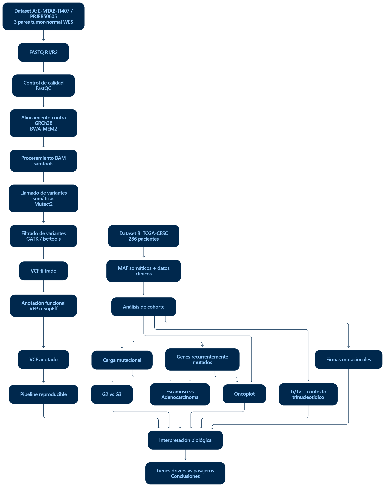
Caracterización reproducible del paisaje mutacional del cáncer cervicouterino
Proyecto 2: Variantes somáticas, genes drivers y firmas mutacionales en cáncer
1 Introducción y pregunta biomédica
El cáncer cervicouterino presenta heterogeneidad clínica e histológica, y esta variabilidad puede acompañarse de diferencias en el número, tipo y contexto de las mutaciones somáticas presentes en cada tumor. En este proyecto se integró un workflow reproducible en Nextflow DSL2 para el procesamiento de variantes somáticas con un análisis de cohorte basado en TCGA-CESC, con el objetivo de caracterizar el paisaje mutacional y explorar su relación con variables clínicas.
La estrategia metodológica se construyó sobre dos conjuntos de datos complementarios. El Dataset A (E-MTAB-11407 / PRJEB50605) se utilizó como rama técnica para demostrar el procesamiento desde FASTQ de tres pares tumor-normal. El Dataset B (TCGA-CESC) se utilizó como cohorte biológica para realizar el análisis de carga mutacional, genes recurrentes, patrones de sustitución, firmas mutacionales y comparaciones por grado tumoral e histología.
Pregunta biomédica
¿Qué diferencias presenta el paisaje mutacional del cáncer cervicouterino según el grado tumoral (G2 vs G3) y el subtipo histológico (carcinoma escamoso vs adenocarcinoma), en términos de carga mutacional y genes recurrentemente alterados?
1.1 Objetivo general
Caracterizar de forma reproducible el paisaje mutacional del cáncer cervicouterino mediante un workflow en Nextflow DSL2 para el procesamiento de variantes somáticas y un análisis de cohorte basado en datos públicos de TCGA-CESC.
1.2 Objetivos específicos
- Implementar y validar un pipeline reproducible para procesamiento de variantes somáticas en pares tumor-normal.
- Anotar funcionalmente SNV e indels y convertir los VCF a un formato adecuado para análisis de cohorte.
- Resumir la carga de mutaciones somáticas no sinónimas por tumor.
- Identificar genes recurrentemente alterados y evaluar diferencias entre grupos clínicos.
- Caracterizar el espectro de sustituciones mediante Ti/Tv, SBS6 y contexto trinucleotídico SBS96.
- Estimar exposiciones a firmas mutacionales COSMIC SBS y relacionarlas con grado e histología.
- Diferenciar la recurrencia observada de la evidencia de genes drivers y posibles eventos pasajeros.
2 Diseño del proyecto
2.1 Dataset A: E-MTAB-11407 / PRJEB50605
El Dataset A corresponde a un subconjunto WES de carcinoma escamoso cervicouterino con muestras tumor-normal pareadas. Se seleccionaron tres pacientes para desarrollar y validar el pipeline técnico con un conjunto pequeño y computacionalmente manejable.
| Paciente | Tumor | Normal | Uso |
|---|---|---|---|
| 1094 | ERR8314271 | ERR8314261 | Validación pipeline 1M |
| 755 | ERR8314276 | ERR8314265 | Validación pipeline 1M |
| 999 | ERR8314284 | ERR8314269 | Validación pipeline 1M |
Cada paciente aporta una muestra tumoral y una normal, con archivos FASTQ paired-end R1/R2. En total corresponden a 6 muestras y 12 archivos FASTQ. Para las ejecuciones locales se generaron subconjuntos reproducibles de 1 millón de pares de lecturas por muestra (1M).
Estos subconjuntos se utilizaron exclusivamente como validación técnica. Por lo tanto, el número de variantes detectadas en Dataset A no se interpreta como carga mutacional real del tumor.
2.2 Dataset B: TCGA-CESC
La cohorte TCGA-CESC se obtuvo desde NCI Genomic Data Commons. Se descargaron 287 archivos MAF correspondientes a 286 pacientes únicos. El paciente TCGA-UC-A7PG presentaba dos muestras tumorales; para evitar doble conteo se conservó el tumor primario 01A y se excluyó la muestra metastásica 06A.
| Variable | Categoría | N |
|---|---|---|
| Grado tumoral | G2 | 126 |
| Grado tumoral | G3 | 111 |
| Grado tumoral | GX / G1 / G4 / vacío | 49 |
| Histología | Squamous | 236 |
| Histología | Adenocarcinoma | 46 |
| Histología | Other | 4 |
Las comparaciones por grado utilizaron 237 pacientes (126 G2 y 111 G3), mientras que las comparaciones histológicas utilizaron 282 pacientes (236 escamosos y 46 adenocarcinomas).
2.3 Estrategia de integración
El diseño combina una rama técnica y una rama biológica. La primera demuestra reproducibilidad desde datos crudos; la segunda aporta tamaño de cohorte suficiente para responder la pregunta biomédica.
3 Metodología
3.1 Workflow Nextflow DSL2
El pipeline técnico fue implementado en main.nf utilizando Nextflow DSL2. Los procesos principales fueron:
FASTQ → FastQC → BWA-MEM2 → SAMtools → MarkDuplicates → Mutect2 → FilterMutectCalls → SnpEff → VCF anotado
El genoma de referencia utilizado fue GRCh38. La anotación funcional se realizó con SnpEff utilizando la base GRCh38.mane.1.5.ensembl.
3.1.1 Software principal
| Herramienta | Versión | Función |
|---|---|---|
| Nextflow | 26.04.6 | Orquestación del workflow |
| FastQC | 0.12.1 | Control de calidad |
| BWA-MEM2 | 2.3 | Alineamiento contra GRCh38 |
| SAMtools | 1.24 | Procesamiento e indexación BAM |
| seqtk | 1.5 | Submuestreo reproducible |
| GATK | 4.6.2.0 | MarkDuplicates, Mutect2 y filtrado |
| Picard | 3.4.0 | Soporte de MarkDuplicates |
| SnpEff | 5.4.0c | Anotación funcional |
3.2 Ambientes reproducibles
Los ambientes principales se encuentran documentados en:
conf/environment_nextflow.ymlconf/environment_gatk4.ymlconf/environment_snpeff.yml
Para el análisis posterior se utilizaron ambientes separados de R/Python, incluyendo un ambiente específico para el análisis de firmas mutacionales con sigminer 2.3.3.
3.3 Llamado y filtrado de variantes somáticas
Mutect2 se utilizó para detectar variantes somáticas en cada par tumor-normal. Posteriormente, FilterMutectCalls asignó el estado de filtrado y se conservaron como PASS las llamadas que superaron los criterios aplicados.
La categoría PASS indica que una variante superó los filtros de esta ejecución, pero no constituye validación experimental o clínica.
3.4 Anotación funcional
Los VCF filtrados fueron anotados con SnpEff. Las consecuencias se clasificaron en categorías de impacto HIGH, MODERATE, LOW y MODIFIER. Estas categorías describen una consecuencia funcional predicha; por sí solas no demuestran patogenicidad ni condición de gen driver.
3.5 Conversión VCF → MAF
Los tres VCF anotados del Dataset A fueron convertidos a MAF mediante analysis/23_datasetA_vcf_to_maf.py. Se generaron archivos MAF individuales y un archivo combinado:
results/downstream/maf/1094.mafresults/downstream/maf/755.mafresults/downstream/maf/999.mafresults/downstream/datasetA_3patients.maf
El MAF combinado contiene 55 variantes PASS. Su estructura fue validada posteriormente con maftools mediante analysis/24_validate_datasetA_maf.R.
3.6 Análisis estadístico
Para el Dataset B:
- La carga mutacional se definió como número de mutaciones somáticas no sinónimas por tumor. No se reportó como TMB/Mb.
- Se utilizaron pruebas de Wilcoxon para comparar la carga mutacional entre grupos.
- Para genes recurrentes se utilizó Fisher exacto por gen.
- La corrección por comparaciones múltiples se realizó mediante Benjamini-Hochberg (FDR).
- Para las firmas mutacionales se compararon exposiciones relativas y se aplicó FDR sobre las firmas evaluadas.
4 Resultados Dataset A
4.1 Control de calidad del alineamiento
Las seis muestras presentaron altos porcentajes de alineamiento, entre 96,09% y 99,87%, y porcentajes de lecturas correctamente pareadas entre 93,01% y 98,00%.
La principal señal de calidad fue la duplicación elevada en la muestra normal del paciente 1094.
| Paciente | Muestra | Lecturas | Mapeadas | % mapeadas | Pareadas | % pareadas | % duplicación |
|---|---|---|---|---|---|---|---|
| 1094 | N | 2.000.000 | 1.986.711 | 99,34 | 1.928.404 | 96,42 | 55,23 |
| 1094 | T | 2.000.000 | 1.989.318 | 99,47 | 1.958.896 | 97,94 | 17,61 |
| 755 | N | 2.000.000 | 1.921.765 | 96,09 | 1.860.128 | 93,01 | 0,37 |
| 755 | T | 2.000.000 | 1.976.757 | 98,84 | 1.889.208 | 94,46 | 1,33 |
| 999 | N | 2.000.000 | 1.995.397 | 99,77 | 1.959.274 | 97,96 | 0,24 |
| 999 | T | 2.000.000 | 1.997.375 | 99,87 | 1.959.992 | 98,00 | 0,21 |
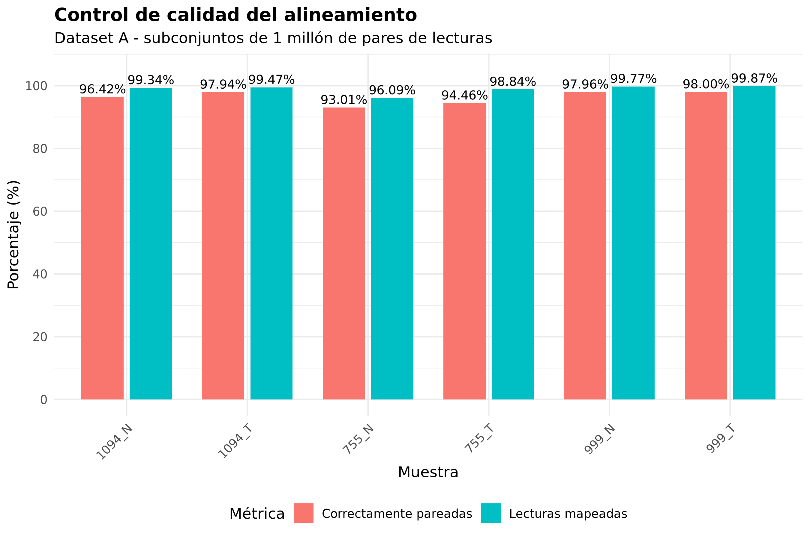
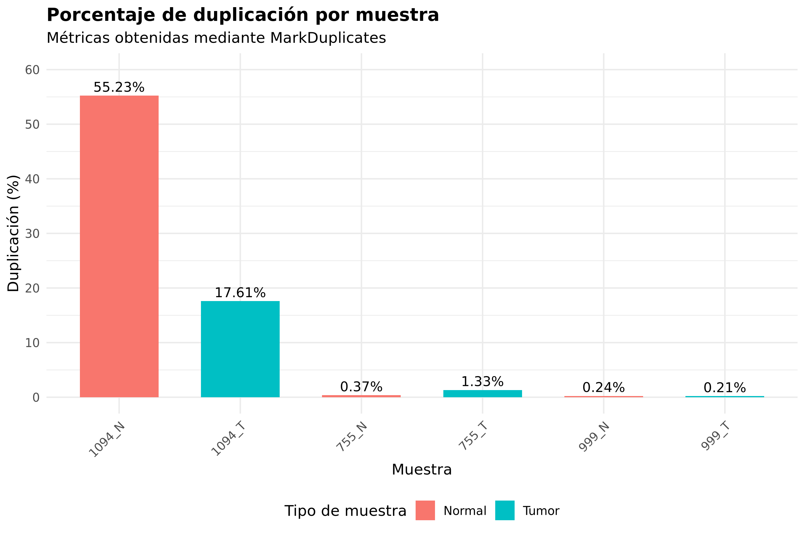
La duplicación fue 55,23% en 1094_N y 17,61% en 1094_T. En las demás muestras fue baja. Esta diferencia sugiere una menor complejidad efectiva de biblioteca en el paciente 1094 y debe considerarse al interpretar sus llamadas de variantes.
4.2 Variantes somáticas y filtrado
Mutect2 generó 555 variantes candidatas en los tres pares tumor-normal. Después del filtrado se identificaron 55 variantes PASS:
| Paciente | Candidatas Mutect2 | PASS |
|---|---|---|
| 1094 | 46 | 6 |
| 755 | 27 | 15 |
| 999 | 482 | 34 |
| Total | 555 | 55 |
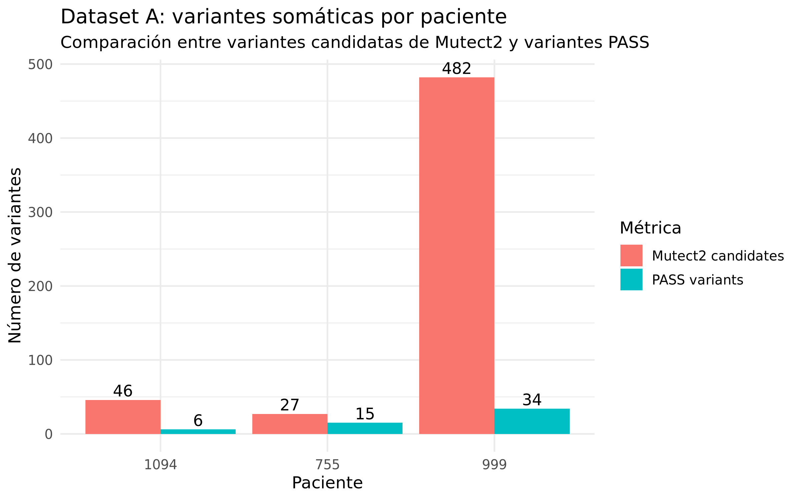
SnpEff clasificó las 55 variantes PASS en 20 MODERATE, 17 LOW y 18 MODIFIER, sin variantes HIGH en estos subconjuntos.
La conversión a MAF conservó las 55 variantes PASS y permitió una estructura compatible con análisis de cohorte. Las clases observadas incluyeron 18 Missense_Mutation, 16 Silent, 10 IGR, 4 Intron, 2 3'UTR, 2 In_Frame_Del, además de categorías menos frecuentes.
Interpretación técnica del Dataset A: el objetivo de esta rama fue demostrar un pipeline reproducible y producir evidencia de QC, filtrado, anotación y conversión a MAF. Los resultados no deben interpretarse como estimación definitiva de carga mutacional ni como validación clínica.
5 Resultados Dataset B
5.1 Carga mutacional
En los 286 tumores se contabilizaron 49.458 mutaciones somáticas no sinónimas. La distribución fue amplia, con presencia de tumores hipermutados; por ello se priorizaron medianas y pruebas no paramétricas.
5.1.1 Comparación G2 vs G3
| Grupo | N | Mediana | Q1 | Q3 | Wilcoxon p |
|---|---|---|---|---|---|
| G2 | 126 | 69 | 48,2 | 118 | 0,808 |
| G3 | 111 | 75 | 41 | 137 | 0,808 |
No se observó una diferencia estadísticamente significativa en la carga mutacional entre G2 y G3.
5.1.2 Comparación por histología
| Grupo | N | Mediana | Q1 | Q3 | Wilcoxon p |
|---|---|---|---|---|---|
| Squamous | 236 | 74 | 49 | 134 | 0,0686 |
| Adenocarcinoma | 46 | 63 | 37,8 | 122 | 0,0686 |
El carcinoma escamoso mostró una mediana mayor que el adenocarcinoma, pero la diferencia no alcanzó significancia estadística convencional.
5.2 Genes recurrentemente alterados
Los genes con mayor frecuencia global fueron:
| Gen | Pacientes mutados | Frecuencia |
|---|---|---|
| TTN | 85/286 | 29,72% |
| PIK3CA | 81/286 | 28,32% |
| KMT2C | 54/286 | 18,88% |
| MUC16 | 49/286 | 17,13% |
| KMT2D | 39/286 | 13,64% |
| EP300 | 36/286 | 12,59% |
| FBXW7 | 34/286 | 11,89% |
La recurrencia no equivale automáticamente a condición de driver. Genes muy grandes, como TTN o MUC16, pueden acumular mutaciones con mayor frecuencia por su longitud.
5.2.1 Comparación G2 vs G3
Se aplicó Fisher exacto por gen y corrección de Benjamini-Hochberg. Aunque algunos genes mostraron diferencias nominales, ninguno permaneció significativo después de FDR.
5.2.2 Comparación escamoso vs adenocarcinoma
KRAS, TP53 y ERBB2 mostraron diferencias nominales llamativas, con mayor frecuencia en adenocarcinoma, pero las asociaciones no permanecieron significativas después de corregir por comparaciones múltiples. Por lo tanto, se consideran hallazgos exploratorios.
5.3 Oncoplots
Los oncoplots se construyeron con los 15 genes más recurrentes. Para histología se utilizaron 282 pacientes y para grado 237 pacientes.
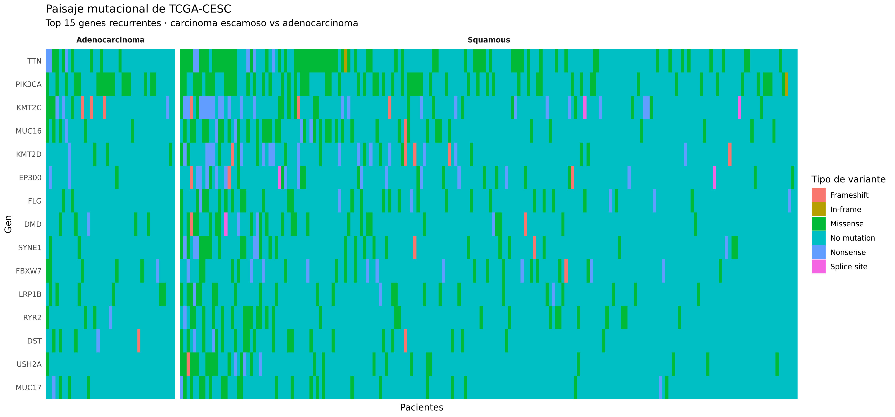
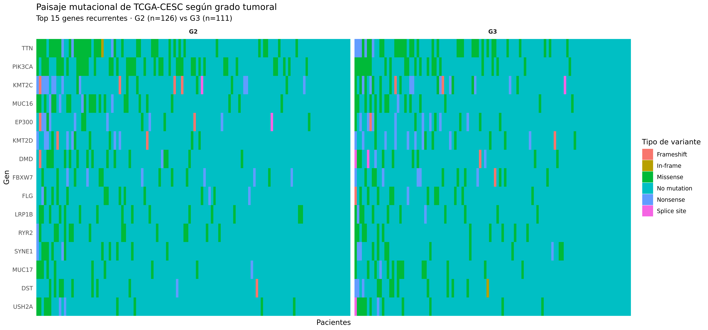
Estas visualizaciones permiten observar la recurrencia de genes y la composición funcional de las variantes por paciente, manteniendo separadas las cohortes elegibles para cada comparación clínica.
6 Espectro mutacional
6.1 Transiciones y transversiones
Se evaluaron 66.646 SNV en los 286 pacientes TCGA-CESC.
- Transiciones: 44.006
- Transversiones: 22.640
- Relación Ti/Tv global: 1,9437
6.2 Espectro SBS6
El espectro global mostró predominio de sustituciones C>T (60,28%), seguido de C>G (20,59%) y C>A (9,73%).
| Clase SBS6 | N | Proporción |
|---|---|---|
| C>A | 6.485 | 9,73% |
| C>G | 13.721 | 20,59% |
| C>T | 40.175 | 60,28% |
| T>A | 933 | 1,40% |
| T>C | 3.831 | 5,75% |
| T>G | 1.501 | 2,25% |
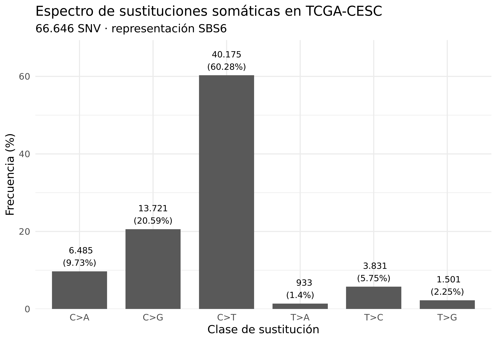
6.3 Contexto trinucleotídico SBS96
Los 66.646 SNV fueron evaluados contra GRCh38 y se recuperó un contexto trinucleotídico válido para 100% de las variantes. No se observaron discordancias entre la base de referencia registrada en el MAF y la secuencia del FASTA utilizada.
Entre los contextos más frecuentes se observaron:
- T[C>T]A: 12,56%
- T[C>T]G: 8,17%
- G[C>T]G: 7,76%
- T[C>G]T: 7,72%
- T[C>G]A: 7,60%
- T[C>T]T: 7,06%
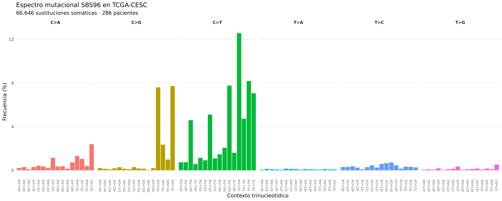
La caracterización SBS96 permitió pasar desde un conteo global de mutaciones hacia una descripción de los procesos mutacionales que pudieron haber contribuido al desarrollo de cada tumor.
7 Firmas mutacionales COSMIC
7.1 Estimación de exposiciones
Las firmas SBS fueron estimadas mediante sigminer utilizando ajuste NNLS y un conjunto de 19 firmas COSMIC descritas para cáncer cervicouterino en TCGA WES:
SBS1, SBS2, SBS3, SBS5, SBS6, SBS10a, SBS10b, SBS13, SBS15, SBS17a, SBS17b, SBS26, SBS28, SBS33, SBS40, SBS44, SBS45, SBS50 y SBS59.
7.2 Calidad del ajuste
Para los 286 pacientes, la similitud coseno entre el perfil observado y reconstruido presentó:
- mediana: 0,9524
- media: 0,9384
- 238/286 pacientes con similitud ≥ 0,90
- 147/286 pacientes con similitud ≥ 0,95
Se definió un subconjunto de alta confianza como pacientes con al menos 50 SNV y similitud coseno de al menos 0,90. Este criterio fue cumplido por 224 pacientes.
7.3 Firmas dominantes y actividad APOBEC
Las firmas dominantes más frecuentes fueron SBS2 y SBS13, ambas asociadas a actividad APOBEC. Para el análisis clínico se definió:
APOBEC = SBS2 + SBS13
En el subconjunto de alta confianza, la exposición combinada APOBEC presentó una mediana global de 52,04%.
7.3.1 Comparación G2 vs G3
| Métrica | G2 | G3 | p | FDR |
|---|---|---|---|---|
| SBS13, mediana (%) | 18,37 | 28,54 | 0,0193 | 0,3576 |
| APOBEC, mediana (%) | 47,02 | 57,63 | 0,0358 | 0,3576 |
G3 mostró una mayor exposición descriptiva a SBS13 y al componente APOBEC combinado. Sin embargo, ninguna diferencia permaneció significativa después de corrección FDR.
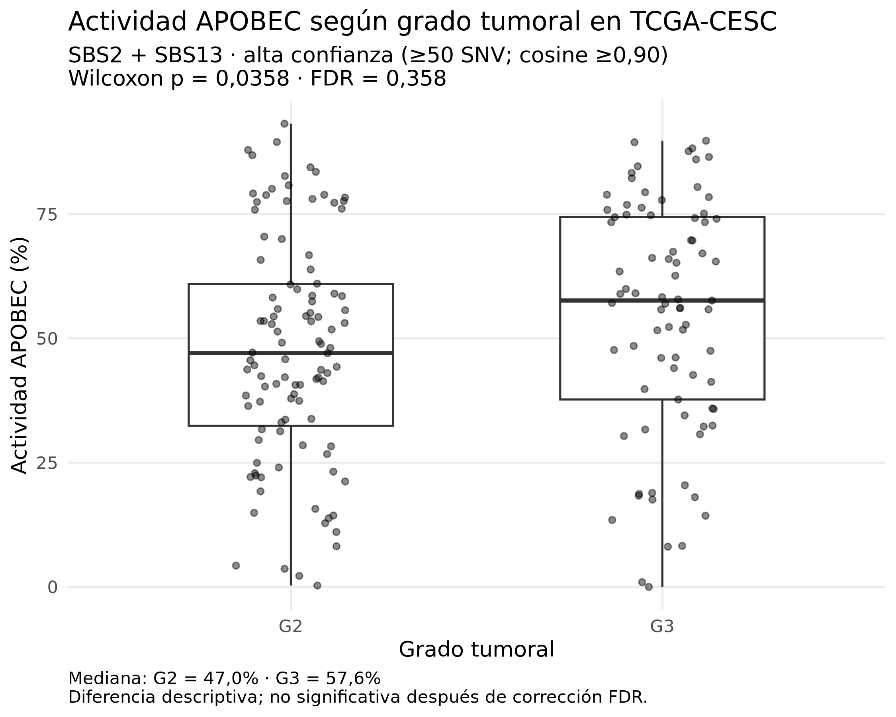
Por lo tanto, el aumento observado en G3 debe interpretarse como una señal descriptiva y no como una diferencia confirmada.
7.4 SBS40 y subtipo histológico
La comparación por histología identificó una diferencia robusta en SBS40:
- Adenocarcinoma: mediana 3,37%
- Squamous: mediana 0%
- p = 0,000764
- FDR = 0,0153
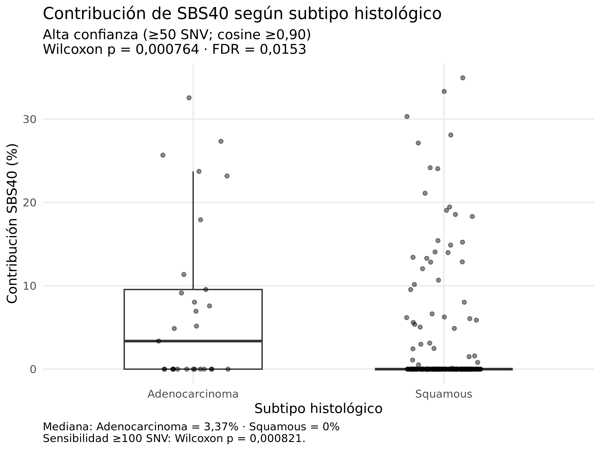
La prevalencia de exposición SBS40 de al menos 1% fue:
- Adenocarcinoma: 15/29 (51,7%)
- Squamous: 42/194 (21,6%)
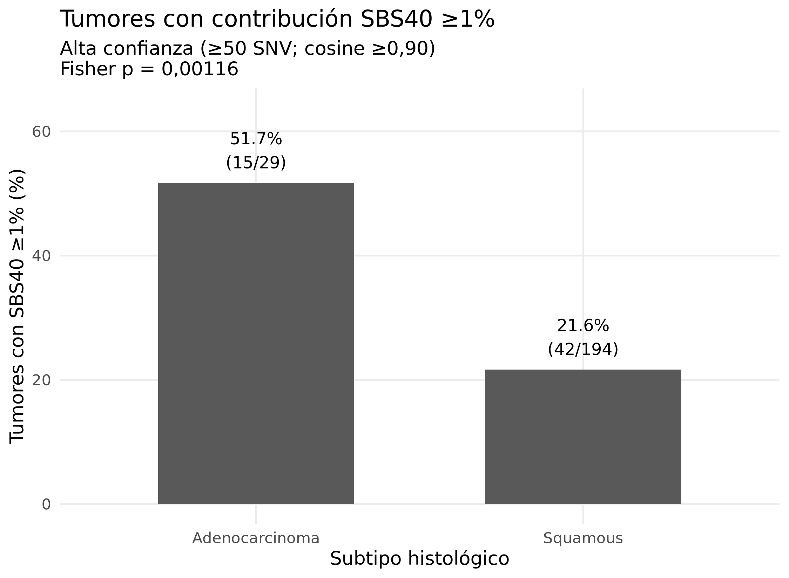
7.5 Análisis de sensibilidad
La asociación de SBS40 con histología se mantuvo al aplicar un criterio más estricto de al menos 100 SNV y similitud coseno de al menos 0,90.
En este análisis:
- Adenocarcinoma: n = 20
- Squamous: n = 119
- Wilcoxon p = 0,000821
- Fisher para exposición positiva p = 0,00426
La consistencia del resultado frente a un umbral más estricto apoya su robustez estadística dentro de esta cohorte. Sin embargo, no se atribuye a SBS40 un mecanismo etiológico específico, ya que su origen biológico permanece incompletamente caracterizado.
8 Genes drivers y posibles pasajeros
La recurrencia de un gen dentro de una cohorte tumoral no implica automáticamente que dicho gen actúe como driver. Para evitar esa interpretación, los genes recurrentes se clasificaron de manera crítica considerando la evidencia biológica conocida y características que pueden aumentar artificialmente su frecuencia de mutación.
| Gen | Frecuencia (%) | Clasificación | Rol |
|---|---|---|---|
| PIK3CA | 28.32 | Driver conocido | Oncogén |
| EP300 | 12.59 | Driver conocido | Supresor tumoral / cromatina |
| FBXW7 | 11.89 | Driver conocido | Supresor tumoral |
| KMT2C | 18.88 | Candidato / asociado a cáncer | Regulación de cromatina |
| KMT2D | 13.64 | Candidato / asociado a cáncer | Regulación de cromatina |
| TTN | 29.72 | Posible pasajero / cautela | Gen estructural muy grande |
| MUC16 | 17.13 | Posible pasajero / cautela | Gen de mucina grande |
| FLG | 12.59 | Interpretación cautelosa | No establecido como driver principal |
| SYNE1 | 12.24 | Interpretación cautelosa | Gen estructural grande |
| DMD | 12.24 | Interpretación cautelosa | Gen grande |
Entre los genes relevantes para interpretación se encuentran:
- PIK3CA: gen driver conocido y oncogén recurrentemente alterado.
- EP300: gen driver/supresor tumoral vinculado a regulación de cromatina.
- FBXW7: gen driver conocido con función supresora tumoral.
- KMT2C y KMT2D: genes relacionados con regulación de cromatina y asociados a cáncer, interpretados con cautela.
- TTN, MUC16, FLG, SYNE1 y DMD: genes de gran tamaño o alta susceptibilidad a mutación, cuya recurrencia puede reflejar en parte eventos pasajeros.
Esta distinción es relevante porque frecuencia de mutación, impacto funcional y papel causal en tumorogénesis representan niveles de evidencia diferentes.
9 Discusión
El proyecto permitió integrar resultados obtenidos a distintas escalas: calidad técnica del procesamiento, carga global de mutaciones, recurrencia de genes, espectro de sustituciones y firmas mutacionales.
En primer lugar, la rama técnica demostró que el pipeline es capaz de procesar pares tumor-normal desde FASTQ hasta VCF anotado y MAF, manteniendo trazabilidad mediante reportes de Nextflow. La principal señal de QC fue la duplicación elevada en la muestra 1094_N, lo que obliga a interpretar con cautela las llamadas de ese paciente. Esta rama cumplió un objetivo metodológico y no fue utilizada para inferir diferencias clínicas.
En TCGA-CESC, la comparación de carga mutacional no mostró diferencias estadísticamente significativas entre G2 y G3 ni entre carcinoma escamoso y adenocarcinoma. Esto indica que la heterogeneidad clínica evaluada no se explica simplemente por una diferencia global en el número de mutaciones no sinónimas.
A nivel génico, PIK3CA apareció entre los genes más recurrentes de la cohorte. Algunas diferencias por histología, como KRAS, TP53 y ERBB2, fueron llamativas en términos nominales, pero no sobrevivieron la corrección por múltiples pruebas. Esto refuerza la necesidad de evitar conclusiones basadas únicamente en p-valores sin ajustar.
El análisis de firmas entregó una dimensión adicional. El componente APOBEC, definido como SBS2 + SBS13, fue alto en la cohorte y mostró una mayor exposición descriptiva en G3, aunque sin significancia después de FDR. Por contraste, SBS40 mostró una diferencia estadísticamente significativa y robusta según histología, con mayor exposición en adenocarcinoma.
Este hallazgo ilustra una idea central del proyecto: dos tumores pueden presentar una carga mutacional similar y, sin embargo, haber acumulado sus mutaciones mediante procesos mutacionales diferentes. Por ello, el estudio del paisaje mutacional no debe reducirse únicamente al número de mutaciones o a los genes más frecuentes.
Finalmente, la interpretación de genes recurrentes también requiere contexto. La presencia frecuente de TTN o MUC16 no implica que estos genes sean los principales drivers de la enfermedad. La evaluación integrada de recurrencia, función biológica y evidencia externa permite distinguir con mayor rigor señales potencialmente relevantes de eventos pasajeros.
10 Limitaciones
Submuestreo del Dataset A. Los resultados técnicos se obtuvieron a partir de 1 millón de pares de lecturas por muestra y no representan la profundidad WES completa.
Recursos de Mutect2. La rama técnica no incorporó Panel of Normals, recurso poblacional de variantes germinales ni estimación de contaminación, elementos recomendados para pipelines somáticos más completos.
PASS no equivale a validación. Las variantes PASS superaron los filtros utilizados, pero no fueron validadas experimentalmente.
Carga mutacional como conteo. El Dataset B se analizó como número de mutaciones somáticas no sinónimas por tumor y no como TMB normalizado en mutaciones/Mb.
Desbalance histológico. La cohorte incluye muchos más carcinomas escamosos que adenocarcinomas, lo que afecta la potencia y precisión de algunas comparaciones.
Tumores hipermutados. Existen casos extremos que influyen fuertemente en los promedios; por ello se priorizaron medianas y pruebas no paramétricas.
Múltiples comparaciones. Los análisis por gen y por firma requieren corrección por FDR. Varias diferencias nominales dejaron de ser significativas tras el ajuste.
Firmas mutacionales. La descomposición depende del número de SNV disponibles y de la selección de firmas de referencia. Por esta razón se aplicaron criterios de calidad y análisis de sensibilidad.
SBS40. Aunque la asociación por histología fue robusta, no se infiere un mecanismo etiológico específico a partir de esta firma.
Drivers y pasajeros. La clasificación interpretativa no sustituye validación funcional ni análisis clínico individual.
11 Conclusiones
El proyecto permitió caracterizar de forma reproducible el paisaje mutacional del cáncer cervicouterino integrando una rama técnica de procesamiento de variantes somáticas y una rama de análisis de cohorte.
En relación con la pregunta biomédica:
- No se observaron diferencias significativas en carga mutacional entre G2 y G3 (medianas 69 vs 75; p = 0,808).
- No se observó una diferencia significativa en carga mutacional entre carcinoma escamoso y adenocarcinoma (medianas 74 vs 63; p = 0,0686).
- Los genes recurrentes mostraron diferencias nominales entre subgrupos, pero no se identificaron asociaciones génicas robustas después de FDR.
- PIK3CA se ubicó entre los genes más recurrentemente alterados de la cohorte y presenta evidencia compatible con un papel driver.
- El espectro mutacional global estuvo dominado por C>T, con una relación Ti/Tv de 1,94.
- Las firmas SBS2 y SBS13, compatibles con actividad APOBEC, fueron predominantes. G3 mostró una mayor exposición descriptiva a APOBEC, pero la diferencia no fue significativa después de FDR.
- SBS40 presentó una diferencia significativa según histología, con mayor exposición en adenocarcinoma, y este resultado se mantuvo en análisis de sensibilidad.
En conjunto, los resultados indican que las diferencias entre subgrupos de cáncer cervicouterino pueden estar mejor reflejadas en los procesos mutacionales subyacentes que en la carga global de mutaciones.
Respuesta final a la pregunta biomédica:
En esta cohorte no se identificaron diferencias robustas en carga mutacional ni en genes recurrentemente alterados entre G2 y G3. Entre carcinoma escamoso y adenocarcinoma tampoco se observó una diferencia significativa en carga global; sin embargo, el análisis de firmas reveló una diferencia reproducible en SBS40. Esto sugiere que tumores con cargas mutacionales similares pueden presentar procesos mutacionales diferentes.
12 Reproducibilidad
El proyecto se encuentra organizado en un repositorio Git con scripts numerados, ambientes reproducibles, samplesheets, resultados livianos y documentación.
12.1 Estructura principal
proyecto_cesc/
|-- analysis/
|-- conf/
|-- data/
|-- docs/
| |-- entregas/
| |-- Informe_Final_CESC.qmd
| |-- mermaid-diagram.png
| `-- flujo_propuesto_del_proyecto_oncológico.png
|-- results/
|-- samplesheet/
|-- main.nf
|-- nextflow.config
`-- README.md12.2 Scripts principales
| Bloque | Scripts |
|---|---|
| QC Dataset A | 01_qc_datasetA.R, 02_variant_qc_datasetA.R |
| Preparación TCGA | 03_check_tcga_maf.py, 04_tcga_mutation_burden.py |
| Estadística burden | 05_tcga_mutation_burden_stats.R |
| Genes recurrentes | 06_tcga_recurrent_genes.py, 07_tcga_recurrent_genes_stats.R |
| Comparación A vs B | 08_compare_datasetA_vs_tcga_squamous.py, 09_datasetA_vs_tcga_squamous_plot.R |
| Oncoplots | 10_tcga_oncoplot_data.py, 10b_tcga_oncoplot_grade_data.py, 11_tcga_oncoplot.R, 12_tcga_oncoplot_grade.R |
| Espectro mutacional | 13_tcga_snv_spectrum.py, 14_tcga_snv_spectrum_plot.R, 15_tcga_SBS96_context.py, 16_tcga_SBS96_plot.R |
| Firmas COSMIC | 17_tcga_COSMIC_signatures.R a 21_tcga_signature_figures.R |
| Resumen final | 22_tcga_final_summary.py |
| VCF → MAF | 23_datasetA_vcf_to_maf.py, 24_validate_datasetA_maf.R |
| Drivers/pasajeros | 25_tcga_driver_passenger_summary.py |
12.3 Ejemplo de ejecución del pipeline
nextflow run main.nf \
-params-file conf/params.yaml \
--samplesheet samplesheet/cervical_wes_1094_1M_samplesheet.csv \
--outdir results/test_1094_1M \
--interval chr1,chr2,...,chr22,chrX,chrY \
-with-report results/test_1094_1M/nextflow_reports/report.html \
-with-timeline results/test_1094_1M/nextflow_reports/timeline.html \
-with-trace results/test_1094_1M/nextflow_reports/trace.txt \
-with-dag results/test_1094_1M/nextflow_reports/dag.html12.4 Archivos grandes
Los FASTQ completos, BAM, referencias, índices y archivos de trabajo de Nextflow no se almacenan en GitHub debido a su tamaño. Se conservan manifests, metadata, samplesheets, URLs, código, parámetros y resultados pequeños necesarios para reproducir el análisis.
12.5 Render del informe
Desde la raíz del repositorio:
quarto render docs/Informe_Final_CESC.qmdEl documento integra tablas CSV y figuras PNG generadas previamente por los scripts del proyecto, manteniendo trazabilidad entre código, resultados e interpretación.
12.6 Repositorio
Repositorio del proyecto:
https://github.com/5leyla5/proyecto_cesc